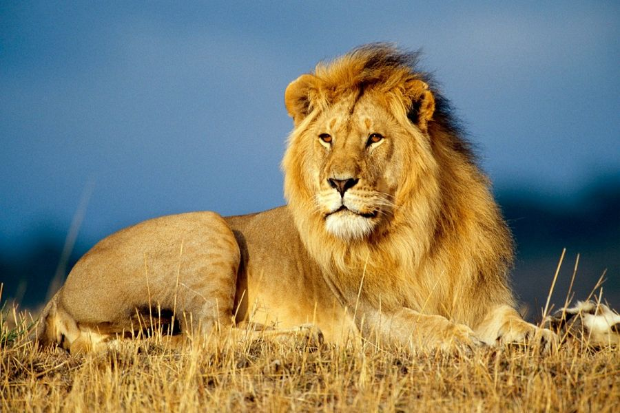

Арыстан
Арыстан (лат. Panthera leo) – жыртқыш сүтқоректілер түрінің мысық тектес тұқымының (Felidae) қатарына кіретін,үлкен мысықтар тұқым тармағына (Pantherinae) жататын төрт пантер (Panthera) тұқымының бірі. Жолбарыспен қатар қазіргі мысық тектес аңдардың ең ірісі және кейбір еркектерінің салмағы 250кг-нан асады. Арыстанның ең ірі түрі жолбарыстың ең ірі түрінен үлкен не кіші деп нақты айту қиын. Амур жолбарысының салмағы өте үлкен екендігі де нақты емес. Ең ірі арыстан түрі(мысалы барбариялық) туралы мәлімет тарихта және ғылымда жоқ. Ал қолда өскен арыстанды алатын болсақ,олар әртүрлі тұқым түрлерімен жиі шағылысып жатады. Қолда өскен арыстан жолбарыстан өлшемі мен салмағы жағынан ірілеу болады деген пікір бар, дәл сондай оған қарсы пікір де жоқ емес.
Арыстанның тарихи мекен ету аймағы қазіргіден әлдеқайда кеңірек болған: ерте орта ғасырда арыстан Африканың шөлді далалары мен тропикалық ормандарынан басқа барлық жерінде бар еді, сонымен қоса Таяу Шығыс, Иран, тіпті кейбір Оңтүстік Еуропада (мысалы, қазіргі Ресейдің оңтүстігінде, 45-інші солтүстік параллель бойымен көтеріле бере, мекен еткен) да кездесетін. Солтүстік және Солтүстік-Батыс Үндістанда арыстан әдеттегі жыртқыш болатұғын. Алайда адамдардың арыстанның артына түсуі және мекен ету аймағының құртылуы арыстандардың Африкада, тек Сахараның Оңтүстігі тарапында ғана сақталуына әкеліп соқты, қазір олардың мекен ету аймағы қатты қысқарды. Азияда кішкене популяция (бірлестік) Гир орманында ғана бар (Үндістанның Гужарат штатында).
Кейінгі плейстоценге дейін, шамамен 10 000 жыл бұрын, арыстан сүтқоректілер ішінде саны бойынша жер бетінде адамдардан кейінгі екінші орынды алатын. Олардың қазба қалдықтары Африканың көп бөлігінде, Еуразия территориясында, Батыс Еуропадан Үндістан ға дейін және Солтүстік Америкада Юконнан Перуге дейінгі аймақтарда табылған. Үңгір жазуларымен танымал еуропалық үңгір арыстаны қазіргі арыстанның тұқымдас түрі болса керек.
Арыстанның сыртқы көрінісі әртүрлі. Олар жыныстық диформизм анық байқалатын сирек жыртқыштардың бірі. Еркектері ұрғашыларынан үлкен болып қана қоймай, сонымен қатар кейбір тұқымдарда едәуір дамып, иықтарын, арқасының кейбір жерлерін және кеудесін жауып тұратын жалдары да болады. Түсінде сары-сұр түстердің түрлі реңктері болады, жалы әдетте терімен бір түстес болады, бірақ қанық тіпті қара да болуы мүмкін. Арыстанның түрлері көп жағдайда жалының түсімен анықталады. Жалынан басқа, денесіндегі жүні қысқа болады, тек құйрығының ұшында бір шоқ ұзын жүн болады.
Арыстан әдетте саваннаны мекендейді, бірақ кейде бұталы-ағашты аймаққа немесе орманға да өтуі мүмкін. Басқа мысық тектес аңдармен салыстырғанда арыстандар жеке-жеке емес ерекше топтарда – прайдтарда өмір сүреді. Прайд әдетте туыстас ұрғашылардан, бірнеше ірі аталықтар мен жас күшіктерден тұрады. Ұрғашылары бірігіп азық іздейді, көбіне ірі тұяқты аңдарға шабуыл жасайды. Арыстандар адамдарға әдейі шабуылдамайды, бірақ ондай жағдайлар да көп кездеседі. Арыстандар ерекше мықты жыртқыш, яғни азық тізбегі жоғары деңгейді алады.
Табиғатта арыстан он-он төрт жыл арасында өмір сүреді, қолда өссе жиырма жылдан астам өмір сүру мүмкіндігі бар. Әдетте еркектерінің он жылдан астам уақыт өмір сүруі сирек кездеседі. Басқа арыстандармен арпалыстары өмір ұзақтықтарын қатты төмендетеді.
